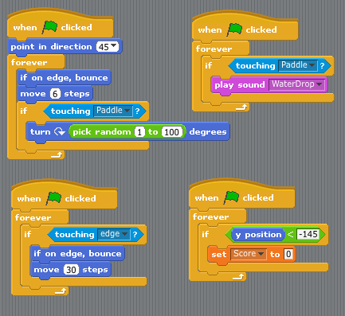

Student at Girls Who Code Summer Immersion Program
Description:
Language Used: Scratch
Paddle ball is a game in which a ball bounces around a window, and the player moves a paddle back and forth across the screen to try and keep the ball up in the air.

Description:
Each turn, a player repeatedly rolls a die until either a 1 is rolled or the player holds and scores the sum of the rolls (i.e. the turn total). At any time during a player's turn, the player is faced with two options:
Roll: If the player rolls a 1, the player scores nothing for this turn, and it becomes the next player's turn. If the player rolls a number 2 - 6, the number on the die is added to the player's turn total, and the player's turn continues.
Hold: The player turn total is added to the player's overall score, and it becomes the next player's turn.
Language Used: Scratch
Description:
Include a clear user interface.
Allow users to create a playlist and play or stop the playlist entirely.
Allow users to choose between at least 3 different songs.
Language Used: Scratch

Description:
You can get a similar effect if you look at each pixel RGB, or red green blue, values. RGB values work like light.
If you add all the values together, you get a number that correlates to how “light the color is. Lighter colors get colorized yellow. Medium/light colors get coded as light blue. Medium/dark colors are red and very dark colors get coded as dark blue.Language Used: Python

Description:
We added multiple balls that bounce around the screen and flash different colors. Additionally, the ball will change sizes each time it hits the edge of the screen
Language Used: Python
Description:
Have you ever played a 2D video game and noticed how the background changes? Some of it moves slowly, like the clouds or mountains, and other parts move quickly, like the trees. You will utilize Python and Pygame to create a similar 2D animation where the background moves continuously across the screen.
Language Used: Python
Description:
Using your City Scroller as a background, create a game and make it your own with sprites!
Language Used: Python